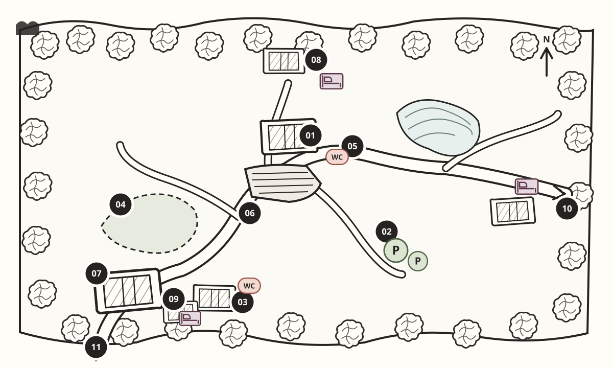

À pied
Si vous êtes à pied, privilégiez l’entrée par le château :
Adresse : Château de Courtalain, 28290 Vald'YerreCoordonnées GPS : 48.08048, 1.13346
Itinéraire vers l’entrée piétonneCHÂTEAU DE COURTALAIN · 28290 VALD'YERRE
En quête d’un lieu en bord de Loire, c’est finalement au bord du Loir qu’on a trouvé notre bonheur. Le domaine devrait plaire à toutes et tous : des forêts pour courir, un étang pour pêcher, des pelouses pour lire, un château pour rêver. On a hâte de vous le faire découvrir !
Rendez-vous au Château de Courtalain, 28290 Vald'Yerre.
Si vous êtes à pied, privilégiez l’entrée par le château :
Adresse : Château de Courtalain, 28290 Vald'YerreCoordonnées GPS : 48.08048, 1.13346
Itinéraire vers l’entrée piétonneSi vous êtes en voiture, empruntez l’entrée par le fond du domaine :
Domaine de Courtalain, 28290 Vald'YerreCoordonnées GPS : 48.08173, 1.14084
Itinéraire vers l’entrée voitures